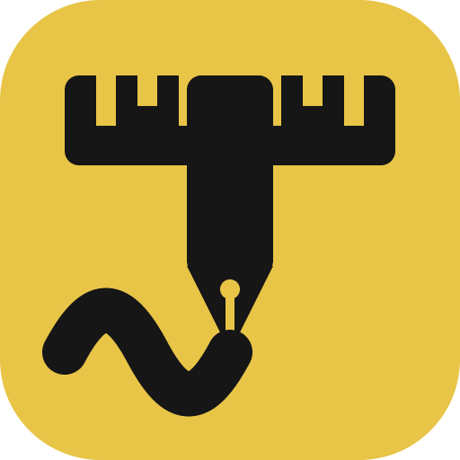
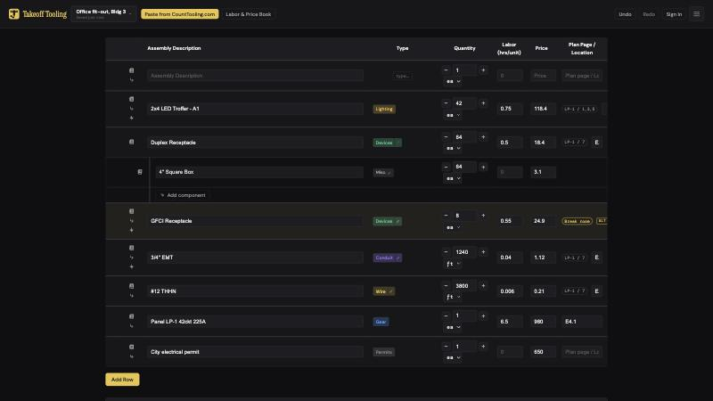
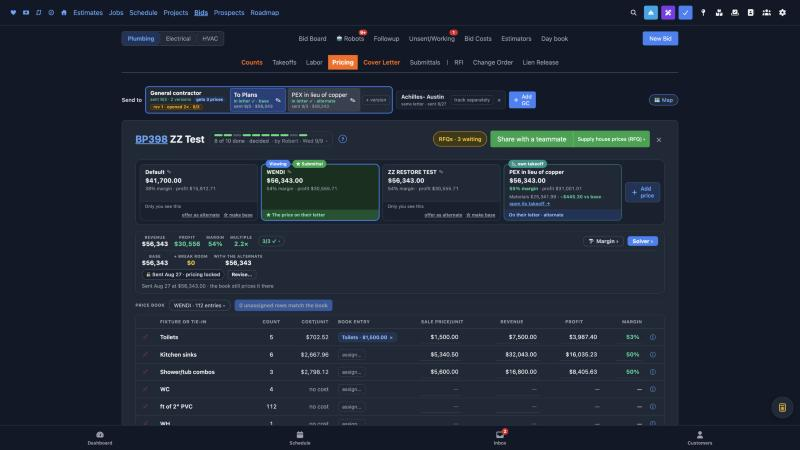

Count
tooling.com
Takeoff
tooling.com
Click
tooling.com
Estimating for Plumbing, Electrical and HVAC, built so a person
can do it easily and swiftly by hand and a robot can do it alongside.
First mover Advantage
Nobody else has all three: count the plans, build the takeoff, send the bid alongside a robot learning to do it too.



CountTooling
Count and measure on the plans, in the browser. Plumbing, electrical and HVAC.
TakeoffTooling
Electrical only. Turns the count into parts and hours, priced from a book.
ClickTooling
The bid: materials, labor, pricing, the letter the customer signs, and the job after the win.
All three are in production and bidding real work today.
Under the hood
One bid, end to end. Each trade takes its own lane.
Plumbing
CountTooling
not needed
ClickTooling
HVAC
CountTooling
not needed
ClickTooling
Electrical
CountTooling
TakeoffTooling
ClickTooling
CountTooling counts and measures on the plans.
TakeoffTooling is only for electrical: it turns the count into parts and hours.
ClickTooling prices the bid, sends the letter, and runs the job after the win.
Nothing is typed twice. A robot has a seat in each app.
For an HVAC company
Built for HVAC too, and a door into the other two trades
- Duct takeoff by the pound: per-size lineal feet and weight, fittings factor, bid weight
- Gauge and sheet-weight rules, fire dampers, grease duct, hood makeup air, outdoor air
- Room volumes and airflow, diffuser neck velocity, a Bid Check that says what is still open
- The same estimators can bid plumbing and electrical with the same tools, without a second department

The bars show the idea, not measured numbers. [Add your own figures if you want to show them.]
The business
Who bids the work decides what you keep
Someone else bids it
Outside estimators do the work. You add a markup.
You pay: them, on every bid.
You keep a little
Your own estimating team
Your estimators do the work. Done right every time.
You pay: the whole team, all year, bid or no bid.
You keep a little
Your relationship people bid it
The people who already know the customer do the bid. The tools do the estimating.
You pay: the tools, and people you already have.
You keep the most, and get more work
The business
Less to think about. More bids out the door.
| Before | Now |
|---|---|
| Count the plans on paper. Type it all into the bid. | Click to count on the screen once. It is already in the bid. |
| Look up the code for pipe size, conduit fill or duct gauge. | The app knows the rule and applies it as you draw. |
| Price the job from memory or a spreadsheet. | The price book prices it. A slider sets your margin. |
| Write the proposal. Remember the alternate. | The letter writes itself, with and without the alternate. The customer signs it from a link. |
| Wonder if the number is right. | A robot bids the same job. The app tells you how far apart you are. |
Every line is a screen that exists today.
What is new
The robot is a user.
The robot has its own login. It uses the same screens, the same price books and the same notes as a person. It does the same steps a person does. You can read everything it did.
What is new
How a robot bids alongside a person
1 · Shadow
The robot bids first
The robot bids the same job from the same plans. It locks in its number before the person has one. It cannot copy.
2 · Envelope
The person bids, then looks
The person writes down their number. Then they open the robot's number and compare, while the bid can still change.
3 · Score
The app keeps score
When the bid goes out, the app writes down how far apart the two numbers were. A scoreboard tracks it over time.
4 · Audit
A person checks the robot
A board shows every robot bid and its score. A person signs off, fixes what is wrong, or takes over.
The robot is also graded on old bids we already won or lost, so its score is not one lucky job.
Accuracy is increasing
92–93%
as accurate as a human estimator.
The robot's number lands within 7 to 8 percent of the human's.
We check it two ways: blind bids on live jobs, and re-bids of old jobs we already won or lost.
Every score is written on the bid itself, so any one of them can be checked.
[Jobs scored to date: N · scoreboard figure on the day of the pitch]
What is new
Cheap for the robot. Easy for the person.
Counts
Takeoffs
Labor
Pricing
Letter
Why the robot can do it cheaply
- A bid is five small steps, not one big document.
- Each step is a screen for a person and one command for a robot.
- The price books do the pricing. The robot never makes up a price.
- Each step can be checked on its own: do the counts add up, does every row have a price, does the total match?
Why a person can check it, or take over
- Every change leaves a note on the bid, in plain words, with who did it.
- Any step can be redone by hand on the same screen.
- If the plans are too bad for the robot, the person does that step. The rest still stands.
Under the hood
Every plan set has mistakes. Someone pays for each one.
You miss it
You bid the drawing as drawn. The mistake shows up in the field, and you eat it.
You pay
You catch it late
You find it after the bid. Now it is a change order fight, rework and delay, and you still pay most of it.
You pay
You catch it before you bid
You expose it in the bid, and the company that sent the plans pays. Until now that took hiring someone smart enough to see it.
They pay
Our apps make catching mistakes standard. Every takeoff gets the same checks: does it add up, is every page scaled, does the drawing break a code rule, is anything counted twice? The mistakes show up before the bid goes out, not after.
Under the hood
Local codes, applied where the mark is made
The code, written the way the app applies it
Every rule we use is written down in plain words, with the code section it comes from. The app reads that same text. What you read is exactly what it applies.
- Plumbing: pipe sizes from fixture units, trap arms, hanger spacing
- Electrical: wire size, conduit fill, voltage drop, where GFCI goes
- HVAC: duct gauge and weight, fire dampers, hood makeup air
The tools that make the marks
Counter
Quick line
Polyline
Chain
Duct run
Set scale
Scale zone
Multiply zone
Measure
Room sizer
Every mark reads the scale. Layers, groups and alternates keep a busy sheet in order. Works on a tablet, works offline.
CountTooling
A plumbing takeoff on a restaurant plan
Recorded in the app, no edits. Electrical and HVAC takeoffs use the same tools on the same sheet.
ClickTooling · Materials
A materials page that prices a plumbing takeoff
1,951
plumbing parts
Pipe and fittings, elbows, tees, couplings, valves, traps, drains, toilets, sinks, showers, tubs, faucets, water heaters
266
assemblies built from those parts
A counted fixture becomes its rough-in parts in one step
602
fixture types the counts map to
Water closets, lavatories, floor drains, hose bibs, and every name a count uses
30,251
price-book entries across 301 books
What each fixture sells for, by book and by bid
The most common parts on a bid: lavatory supplies, P-traps, closet supplies, wax gaskets, closet bolts, angle stops, mop-basin hardware, mixing valves, PVC pipe, J-hooks and hangers.
Part types: Fitting · Pipe · Tee · Elbow · Coupling · Valve · Trap · Drain · Toilet · Sink · Shower · Bathtub · Faucet · Water heater · Drinking fountain · Other
- Every part is priced per supply house, with its price history and the day it was quoted
- Materials by stage (rough-in, top-out, trim-set) or one combined list for the whole job
- Every bid's takeoff feeds the labor budget, the purchase list and the job's cost card on the win
Counts read from the live database on 2026-09-30.
TakeoffTooling · Materials
An electrical book of parts and assemblies
5,865
parts, each with a price
Boxes, covers, connectors, straps, breakers, wire, conduit, fixtures
24,291
assemblies made from those parts
An assembly is a recipe: the parts and the hours for one thing installed once
One part goes into many recipes, so there are more recipes than parts. Example: a duplex receptacle assembly = 1 receptacle + 1 box + 1 cover + 2 connectors + half an hour of labor. The same box is in hundreds of other assemblies.
| Conduit | Gear | Special systems | Devices | Lighting | Wire |
|---|---|---|---|---|---|
| 16,113 assemblies | 5,012 | 1,455 | 1,096 | 466 | 149 |
- A counted device, run or fixture becomes its parts and hours in one click
- Supplier price updates land on the book with who quoted them and when
Real work today
Not a demo. Our own bids run through it every day.
352
bids built since January 2026
Plumbing, electrical and HVAC
281
sent to customers
43 won so far, the rest lost or still open
205
takeoffs finished by people in CountTooling
A typical one: 51 counts and 57 measured runs on a 9-page set
$54M
in bids sent to 61 customers
The biggest was $15.8 million. The typical bid is about $43,000.
Every number above comes from the live system, not a projection. The people who built the tools use them to bid their own work, which is why the rough edges are already gone.
Read from the live database on 2026-09-30. Test bids and robot copies excluded.
The business
Ways to get paid, and how big each one is
| Revenue path | What we sell | TAM | SAM | SOM 3–5 yrs |
|---|---|---|---|---|
| 1 · Shops with estimators | Seats plus robot bids, priced per bid | $471M – $3.7B | $174M – $1.5B | $1.7M – $75M |
| 2 · Shops with no estimator | Audited robot bids, so small shops can bid | $95M – $897M | $24M – $269M | $0.5M – $22M |
| 3 · The job after the win | After the win: costing, crews, billing | $976M – $3.2B | $385M – $2.0B | $3.8M – $101M |
| 4 · A share of the work won | A small cut of every job won through us | $585M – $2.3B | $386M – $1.5B | $3.9M – $77M |
| 5 · Every specialty trade | Same tools for concrete, drywall, roofing | $1.3B – $6.9B | $467M – $4.0B | $4.7M – $200M |
| 6 · Money on the flow | Payments, materials financing, bonding | $940M – $3.1B | $308M – $1.8B | $3.1M – $90M |
| 7 · Numbers for GCs | A trade number on every GC's plan set | $172M – $2.0B | $69M – $1.2B | $0.7M – $60M |
| Stack: 2 + 3 + 6 | Bids for anyone, the job, the money | $2.0B – $7.2B | $717M – $4.1B | $7.4M – $213M |
Each cell reads low to high. US only, except the high case of path 1. Firm counts are BLS 2024. Low prices what shops pay for software today; high prices against the estimator or the revenue replaced. SOM is 1% of SAM low and 5% high (2% and 8% for path 2, which sells itself).
The ask
Help us grow while we are still first.
The apps work. The robot bids. Nobody else has this yet. What we do not have is the reach to put it in front of every plumbing, electrical and HVAC estimator before someone copies the idea.
What we are asking for
We want a partner, not just a cheque. [$__] funds the next year of building and selling. Your company becomes the first HVAC shop to bid with the tools.
What it buys
People to sell and onboard estimators, books for more trades and regions, and more robot capacity, so the lead becomes a moat.
What you get
A hand on the future. Your estimators use the tools first. You have a seat at the table as all three trades come online.
Next step: bid one of your own plan sets with us, live, in one sitting.
Robert Douglas · text me: +1 617 939 6295 · or call the office: (512) 360-0599